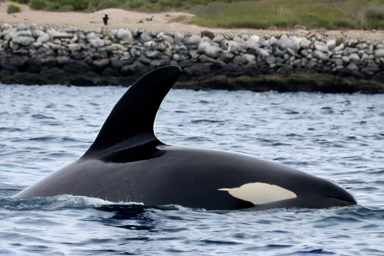

Orcas que se dan masajes con algas
Las orcas residentes del sur fabrican pequeños rodillos de kelp y los usan entre dos cuerpos como una herramienta social de acicalamiento.
Las orcas ya tenían fama de listas, pero ahora también parecen llevar spa marino incorporado. En el mar de Salish, investigadores observaron a las orcas residentes del sur arrancando trozos cortos de kelp toro y colocándolos entre su cuerpo y el de otra orca para rodarlos mientras nadan juntas.
El equipo documentó 30 episodios en 8 de 12 días de observación con drones, entre abril y julio de 2024. La conducta, bautizada como allokelping, no parece un simple juego: aparece en machos y hembras de distintas edades, mantiene el contacto durante decenas de segundos y se asocia más con parientes maternos y animales de edad parecida.
La hipótesis prudente es que sirva para cuidar la piel y reforzar vínculos sociales, algo parecido al acicalamiento de primates, pero versión cetácea con rodillo vegetal. Si se confirma su función, sería un caso muy raro de herramienta fabricada por mamíferos marinos y usada por dos individuos a la vez. Vamos, masaje cooperativo con alga incluida; el balneario lo inventó la evolución antes que nosotros.
Fuente: Current Biology — https://www.cell.com/current-biology/fulltext/S0960-9822(25)00450-6; BBC News — https://www.bbc.co.uk/news/articles/cwyqll5n2qro
Volver a la carta